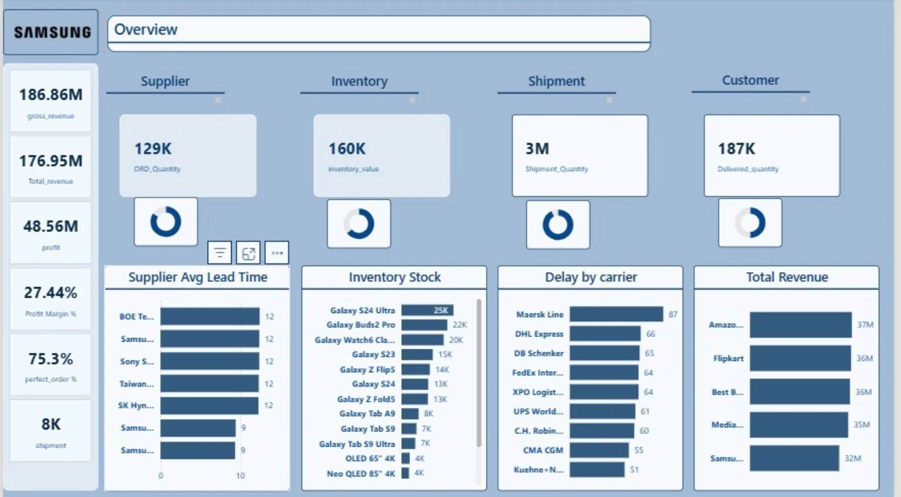
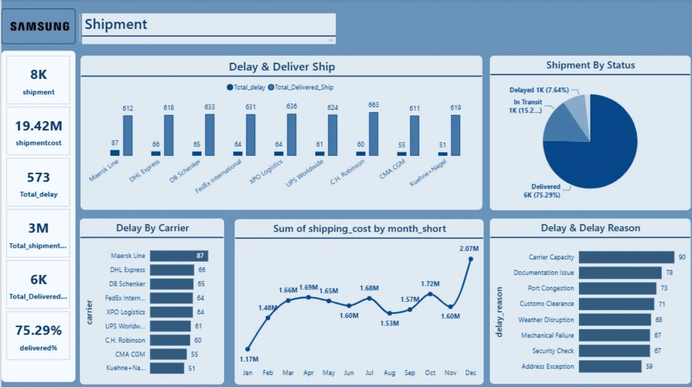
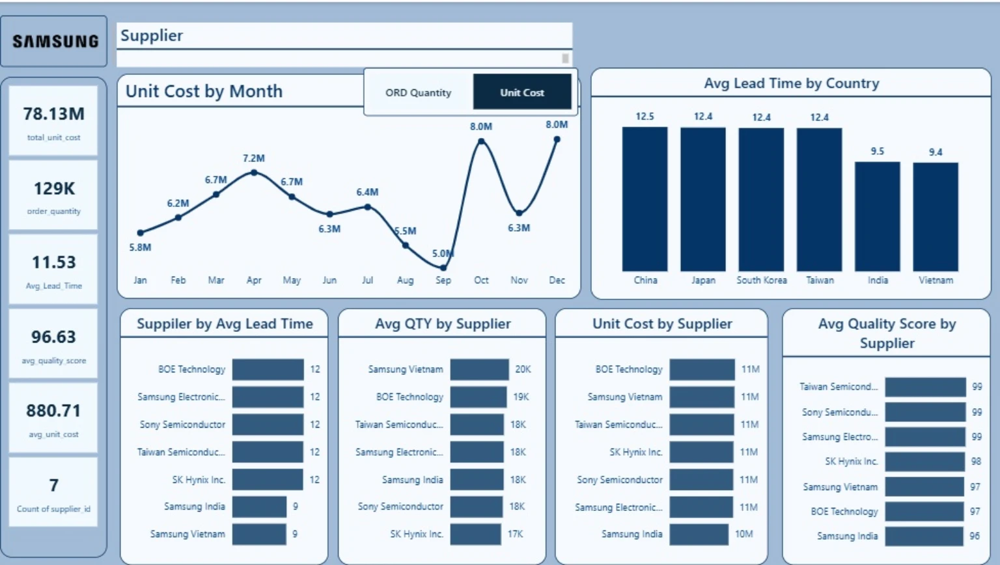
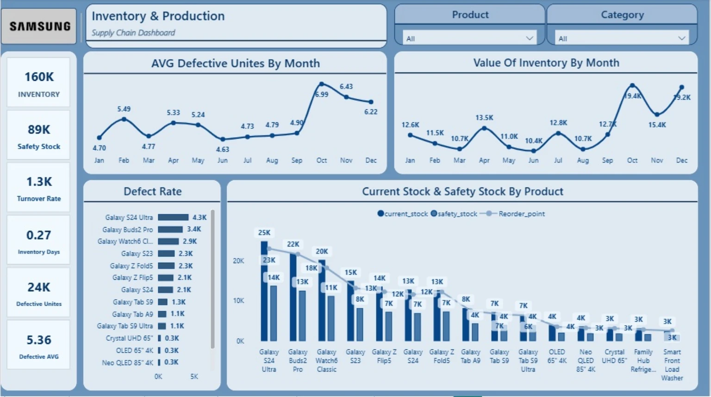
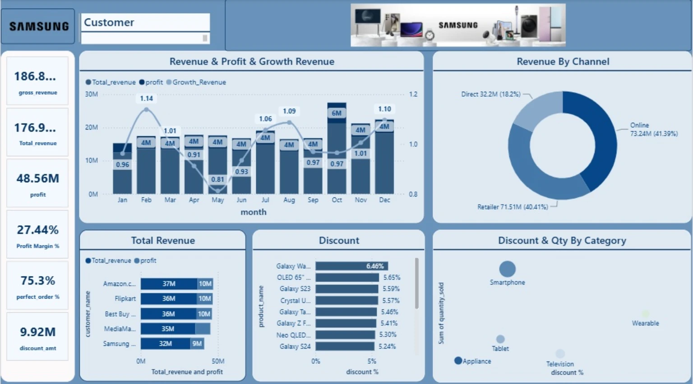

What the analysis set out to answer
Examine operational and commercial performance across suppliers, inventory, production, shipping carriers, and sales channels.
A cross-functional view of supplier performance, production quality, inventory, shipments, and commercial outcomes.
Examine operational and commercial performance across suppliers, inventory, production, shipping carriers, and sales channels.
Organized performance into overview, shipment, supplier, inventory and production, and customer reporting views.
Enables focused reviews of carrier delays, supplier trade-offs, product stock positions, and sales-channel contributions.





Portfolio analysis based on supplied dashboard screenshots. Figures are descriptive, not verified business improvements. Dataset provenance, metric definitions, technical implementation, and commercial permissions should be confirmed before making stronger claims.